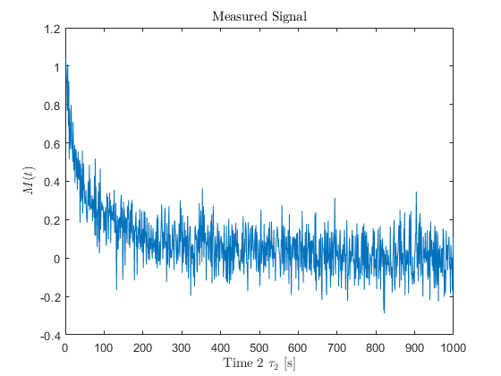
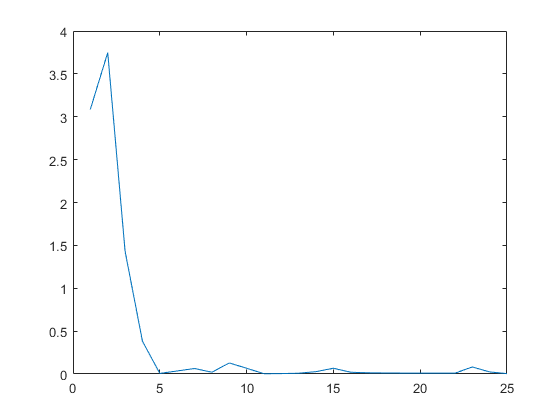
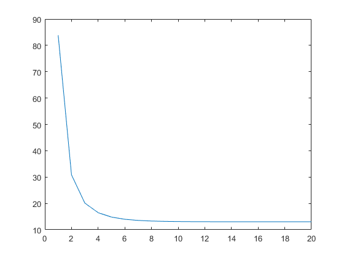
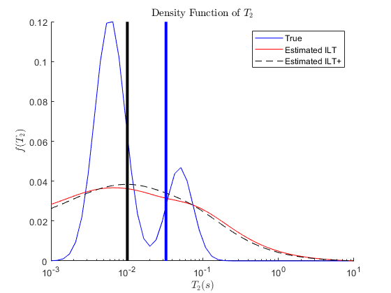
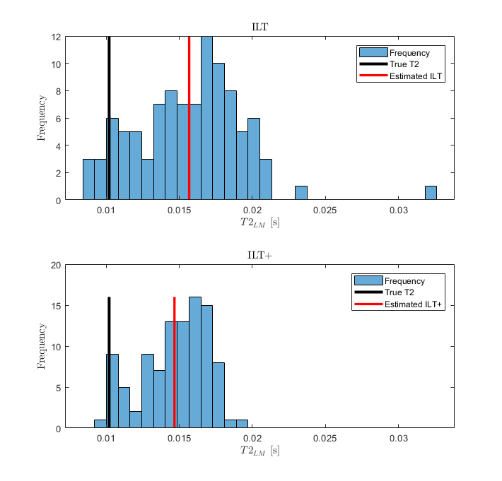
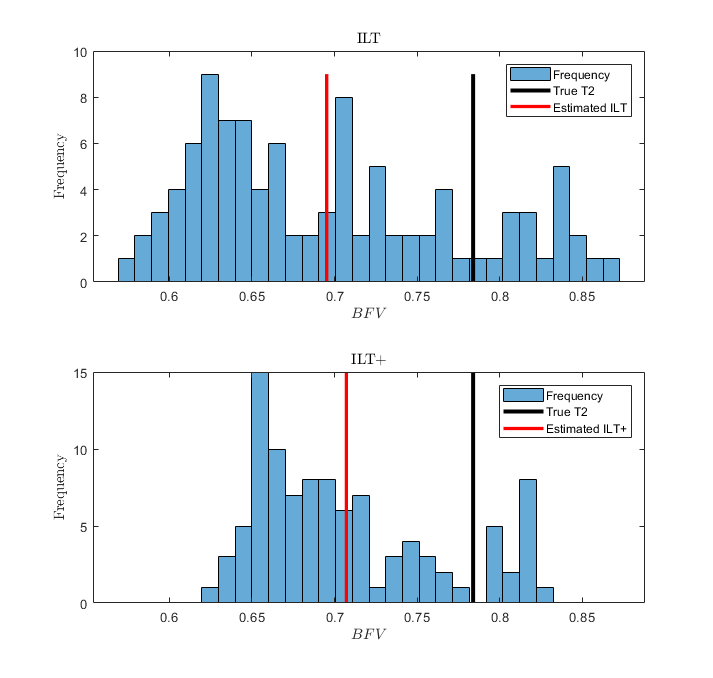

Contents
David Dobbie
Victoria University of Wellington Recreating paper 4 A More accurate estimate of T2 distribution from direct analysis of NMR measurements
F. K. Gruber et al / Journal of Magnetic Resonance 228 (2013) 95-103
%Aim: To utilise directly computedlinear functionals such as moments and %tapered areas to add constraints to the optimisation framework for inverting %measured data into their density function. %close all clc clf clear set(0,'defaultTextInterpreter','latex');
init variables
number of data points in each dimension
N2 = 1000; % number of bins in relaxation time grids Ny = 50; %sets how many singular values we compress to sing_val=10; %no singular values tE = 200e-6; % sample interval T2 = logspace(-3,1,Ny); %form T2 domain, use log since will be small %forms measurement arrays, time tau1 and tau2 domains tau2 = (1:N2)'*tE; K2 = exp(-tau2 * (1./T2) ); % simple T2 relaxation kernel % RECREATE MODEL 2 from Gruber et al pap 4 %generate the density fn T2_mean1 = 0.05 T2_var1 = 0.03 T2_mean2 = 0.006 T2_var2 = 0.04 % formation of distribution f_answer = .25*normpdf(log10(T2), log10(T2_mean1), sqrt(T2_var1))'; f_answer = f_answer + .75*normpdf(log10(T2), log10(T2_mean2), sqrt(T2_var2))'; f_answer = f_answer./trapz(f_answer); % normalise to unity porosity porosity = trapz(f_answer); %delta distribut %f_answer = zeros(Ny,1); %f_answer(500) = 1; %{ figure(1) plot(T2, f_answer); set(gca, 'XScale', 'log') xlabel('$T_2(s)$') ylabel('$f(T_2)$') title('Correct Density Function of $T_2$'); %} % generate the noise noise_mean = 0; n_std_dev = 0.1; Tc = 0.033; mask_Tc = zeros(1,length(T2)); for i = 1:length(T2) if T2(i) < Tc mask_Tc(i) = 1; end end %calc the logarithmic mean actualMean = exp((log(T2))*f_answer); %calc BFV actualBFV = mask_Tc*f_answer; %--------------- running simulations and results results_leng = 100; results_T2meanold = zeros(1,results_leng); results_T2meannew = zeros(1,results_leng); results_BFVold = zeros(1,results_leng); results_BFVnew = zeros(1,results_leng); areaErrorOld = 0; areaErrorNew = 0; for i = 1:results_leng [f_est_old f_est_new] = estimateDensityFunction(n_std_dev, noise_mean, ... f_answer, K2, N2, Ny, tE, T2, tau2, porosity); results_T2meanold(i) = exp((log(T2))*f_est_old); % weighted log mean w/ T2 axis results_T2meannew(i) = exp((log(T2))*f_est_new); % weighted log mean w/ T2 axis results_BFVold(i) = mask_Tc*f_est_old; results_BFVnew(i) = mask_Tc*f_est_new; figure(50) clf hold on plot(T2, f_answer,'-b'); plot(T2, f_est_old,'-r'); plot(T2, f_est_new,'--k'); areaErrorOld = areaErrorOld + trapz(abs(f_answer-f_est_old))/results_leng; areaErrorNew = areaErrorNew + trapz(abs(f_answer-f_est_new))/results_leng; p = plot([actualMean actualMean], [0 max(f_answer)]); p.LineWidth = 3; p.Color = 'k'; p = plot([Tc Tc], [0 max(f_answer)]); p.LineWidth = 3; p.Color = 'b'; hold off set(gca, 'XScale', 'log') xlabel('$T_2(s)$') ylabel('$f(T_2)$') title('Density Function of $T_2$'); legend('True','Estimated ILT','Estimated ILT+') end %--------------- plotting old T2 est/ mean figure(5) subplot(2,1,1) min_val = min([results_T2meanold results_T2meannew]); max_val = max([results_T2meanold results_T2meannew]); h1 = histogram(results_T2meanold, 30, 'BinLimits', [min_val max_val]); title('ILT') xlabel('$T2_{LM}$ [s]') ylabel('Frequency') acquiredOldEst_mean = mean(results_T2meanold); hold on p = plot([actualMean actualMean], [0 max(h1.Values)]); p.LineWidth = 3; p.Color = 'k'; p = plot([acquiredOldEst_mean acquiredOldEst_mean], [0 max(h1.Values)]); p.LineWidth = 2.5; p.Color = 'r'; hold off legend('Frequency','True T2','Estimated ILT') %--------------- plotting new T2 est/ mean subplot(2,1,2) h2 = histogram(results_T2meannew, 30, 'BinLimits', [min_val max_val]); title('ILT+') xlabel('$T2_{LM}$ [s]') ylabel('Frequency') acquiredNewEst_mean = mean(results_T2meannew); hold on p = plot([actualMean actualMean], [0 max(h2.Values)]); p.LineWidth = 3; p.Color = 'k'; p = plot([acquiredNewEst_mean acquiredNewEst_mean], [0 max(h2.Values)]); p.LineWidth = 2.5; p.Color = 'r'; hold off legend('Frequency','True T2','Estimated ILT+') T2LM_ILT_NSD = (std(results_T2meanold)/mean(results_T2meanold))*100 T2LM_ILTX_NSD = (std(results_T2meannew)/mean(results_T2meannew))*100 T2LM_ILT_NRMSE = normalisedRootMeanSquareError(acquiredOldEst_mean,actualMean) T2LM_ILTX_NRMSE = normalisedRootMeanSquareError(acquiredNewEst_mean,actualMean) %-------------------------------------------------------------------------- % ------- BFV (bound fluid volume) figure(6) subplot(2,1,1) min_val = min([results_BFVold results_BFVnew]); max_val = max([results_BFVold results_BFVnew]); h1 = histogram(results_BFVold, 30, 'BinLimits', [min_val max_val]); title('ILT') xlabel('$BFV$') ylabel('Frequency') acquiredOldEst_bfv = mean(results_BFVold); hold on p = plot([actualBFV actualBFV], [0 max(h1.Values)]); p.LineWidth = 3; p.Color = 'k'; p = plot([acquiredOldEst_bfv acquiredOldEst_bfv], [0 max(h1.Values)]); p.LineWidth = 2.5; p.Color = 'r'; hold off legend('Frequency','True T2','Estimated ILT') %--------------- plotting new T2 est bfv subplot(2,1,2) h2 = histogram(results_BFVnew, 30, 'BinLimits', [min_val max_val]); title('ILT+') xlabel('$BFV$') ylabel('Frequency') acquiredNewEst_bfv = mean(results_BFVnew); hold on p = plot([actualBFV actualBFV], [0 max(h2.Values)]); p.LineWidth = 3; p.Color = 'k'; p = plot([acquiredNewEst_bfv acquiredNewEst_bfv], [0 max(h2.Values)]); p.LineWidth = 2.5; p.Color = 'r'; hold off legend('Frequency','True T2','Estimated ILT+') BFV_ILT_NSD = (std(results_BFVold)/mean(results_BFVold))*100 BFV_ILTX_NSD = (std(results_BFVnew)/mean(results_BFVnew))*100 BFV_ILT_NRMSE = normalisedRootMeanSquareError(acquiredOldEst_bfv,actualBFV) BFV_ILTX_NRMSE = normalisedRootMeanSquareError(acquiredNewEst_bfv,actualBFV) %{ figure(51) hold on plot(T2, abs(f_answer-f_est_old),'-r'); plot(T2, abs(f_answer-f_est_new),'--k'); hold off set(gca, 'XScale', 'log') xlabel('$T_2(s)$') ylabel('$f(T_2)$') title('Error in Density Function Prediction of $T_2$'); legend('Estimated ILT','Estimated ILT+') %}
T2_mean1 =
0.0500
T2_var1 =
0.0300
T2_mean2 =
0.0060
T2_var2 =
0.0400
function definitions:
% Estimation of the density function from measured data. Retruns two % results, the ILT method in Venk. 2002 (old) and the ILT+ method in Gruber % 2013 (new). % INPUTS: % noise standard deviation % noise mean % density function answer % K2 kernel % N2 size of t axis % Ny size of T2 axis % tE time between samples % T2 relaxation time axis % tau2 time axis % porosity of density function % OUTPUTS: % f_est_old estimation of density function with ILT old method % f_est_new estimation of density function with ILT+ new method function [f_est_old f_est_new] = estimateDensityFunction(n_std_dev, ... noise_mean, f_answer, K2, N2, Ny, tE, T2, tau2, porosity) omega = linspace(-0.5,1,12); T_cutoff = [0.01 0.1 1]; noise = n_std_dev*normrnd(noise_mean, 1, [N2 ,1]); m = K2*f_answer + noise; % figure(2) clf plot(m); ylim([-0.4 1.2]) title('Measured Signal') xlabel('Time 2 $ \tau_2 $ [s]') ylabel('$M(t)$') % % estimate tapered areas for different cut off times tpdAreasVect = ones(size(T_cutoff,2), 2); tpdAreaKern = ones(size(T_cutoff,2), Ny); indx = 1; for Tc = T_cutoff [tpd, tpd_var] = exponentialHaarTransform(tE, m, n_std_dev, Tc, T2,tau2); k = exponetialHaarTransformKernel(Tc, T2); tpd_var = n_std_dev^2 *(norm(k))^2; tpdAreasVect(indx,:) = [tpd, sqrt(tpd_var)]; tpdAreaKern(indx,:) = exponetialHaarTransformKernel(Tc,T2); indx = indx + 1; end tpdAreasVect; % estimate different moments of the T2 distribution momentVect = ones(size(omega,2), 2); momentKern = ones(size(omega,2), Ny); indx = 1; for w = omega kern = T2.^w/porosity; momentKern(indx,:) = kern; [mom, mom_var] = mellinTransform(m, w, tE, porosity, n_std_dev, n_std_dev); % to estimate the uncertainty of the moment (eq 11) %k = mellinTransform(ones(size(m)), w, tE, porosity, 0, n_std_dev); %mom_var = (n_std_dev)^2 * norm(k)^2; momentVect(indx,:) = [mom, sqrt(mom_var)]; %%since we use uncertainty indx = indx + 1; end momentVect; % create compressed m vector of values for optimisation [m_comp, k_comp] = compressData(m,K2,10); m_comp = m_comp'; % compressed m vector G_opt = [m_comp; momentVect(:,1) ; tpdAreasVect(:,1)]; %eq 13 pap4 L_opt = [k_comp ; momentKern ; tpdAreaKern]; % eq 14 pap 4 W_vect = [1*(ones(size(m_comp)))/n_std_dev; 0.01./momentVect(:,2) ; ... 1./tpdAreasVect(:,2)]; W_opt = W_vect .* eye(size(G_opt,1)); % normalise to unity, make it comparable to unweighted method %W_opt = 4*W_opt; W_opt = W_opt/(norm(W_opt)); %{ G_opt = [m_comp ; tpdAreasVect(:,1)]; %eq 13 pap4 L_opt = [k_comp ; tpdAreaKern]; % eq 14 pap 4 W_vect = [(1/n_std_dev)*(ones(size(m_comp))) ; ... tpdAreasVect(:,2)]; W_opt = W_vect .* eye(size(G_opt,1)); G_opt = [m_comp ]; %eq 13 pap4 L_opt = [k_comp]; % eq 14 pap 4 W_vect = [(1/n_std_dev)*(ones(size(m_comp)))]; W_opt = W_vect .* eye(size(G_opt,1)); %} f_est_new = optimisationInverseTransform(G_opt, L_opt, W_opt, n_std_dev); f_est_old = optimisationInverseTransform(m_comp, k_comp, eye(size(m_comp,1)), n_std_dev); end % Discretised Exponential Haar Transform. Used for computing the tapered % areas % INPUTS: % m = N x 1 measurement vector % Tc = the bound and fluid fraction point (in time) % tE = sample interval of m % sigma_n = standard deviation of the noise % T2 = T2 relaxation axis % OUTPUTS: % area = the T2 tapered area (where K(T2) > f(T2)) % area_uncert = the T2 uncertainty of the tapered area function [area area_uncert] = exponentialHaarTransform(tE, M, sigma_n, Tc, T2,tau2) area = 0; area_uncert = 0; % set up in table 1 of paper C = 0.7213 / Tc; alpha = 1.572*Tc; beta = 0.4087 / Tc; gamma = 1./T2 + beta; N = length(M); % implementing (-1)^n as vector operator n = floor(tau2/(2*alpha)); n_term = ((-1).^n)'; k = C.*n_term'.*exp(-beta * tau2); area = tE * (k' * M); % eq5 area_uncert = (sigma_n)^2 *tE * ((tE * k')*k); % eq6 kernel = (C./gamma).*tanh(alpha*gamma); end % Calculate the kernel used to compute the tapered area in the T2 domain. % This is the exponetial Haar transform % INPUTS: % Tc = the bound and fluid fraction point (in time) % T2 = T2 relaxation axis % OUTPUTS: % kern = the kernel of the tapered heaviside function used. % function [kern] = exponetialHaarTransformKernel(Tc, T2) % set up in table 1 of paper C = 0.7213 / Tc; alpha = 1.572*Tc; beta = 0.4087 / Tc; gamma = 1./T2 + beta; kern = (C./gamma).*tanh(alpha*gamma); end % Calculate the actual tapered area of the distribution (fully polarised). % uses the exponetial Haar transform. % INPUTS: % f = Ny x 1 desnity function vector % Tc = the bound and fluid fraction point (in time) % T2 = T2 relaxation axis % OUTPUTS: % area = the T2 tapered area (where K(T2) > f(T2)) % function [area] = actualTaperedArea(f, Tc, T2) % set up in table 1 of paper C = 0.7213 / Tc; alpha = 1.572*Tc; beta = 0.4087 / Tc; gamma = 1./T2 + beta; K = (C./gamma).*tanh(alpha*gamma); area = K * f; end % Calculates the normalised root mean square error of two different % functions. Quantifies correctness. % INPUTS: % est = estimate function % true = the true function % OUTPUTS: % nrmse = normalised root mean square error of the dist. % function nrmse = normalisedRootMeanSquareError(est, true) s =(est - true).^2; ms = s; rms = sqrt(ms); nrmse = (rms/true)*100; end % Compress the measured data to a set number of singular values. This % involves extracting the largest singular values that make up the inherent % behaviour of the system % INPUTS: % M = N x 1 measurement vector % K1 = input kernel % sing_val = number of singular values we compress to % OUTPUTS: % M_compressed = the compressed measurement vector % k_compressed = the compressed kernel vector % function [M_compressed K_compressed] = compressData(M,K,sing_val) N = length(M); %svd results sorted by magnitude singular values. i.e we only have to %truncate to s1 rowsxcols. [U2, S2, V2] = svd(K); %only leave trunc number of largest values. This removes small weighted %components that have little bearing on actual data. %Use if statements for truncation. if sing_val < N S2c = S2(1:sing_val,1:sing_val); U2c = U2(:,1:sing_val); V2c = V2(:,1:sing_val); else S2c = S2(1:sing_val,:); U2c = U2(:,1:sing_val); V2c = V2(:,:); end %set new compressed kernels K_compressed = S2c*V2c'; M_compressed = (M'*U2c); %{ figure(3) plot(M_compressed); title('Compressed Measured Signal') xlabel('Time 2 $ \tau_2 $ [s]') ylabel('$M_c(t)$') %} end % Optimisation function. This function uses regularisation and optimisation % technqiues with a weighted matrix and the cost matrices to apply an ILT % (or ILT+). This is adapted from Venk 2002. solving Fredholm integrals % INPUTS: % G = N x 1 linear functional and compressed measurement data % K = compressed input kernel % L = mapping matrix conversion from T2 to t space % W = weighting matrix % OUTPUTS: % f_est = the estimated density function % function f_est = optimisationInverseTransform(G, L, W, n_std_dev) alpha = 1000; G = W*G; if(length(G) > 11) figure(34) clf plot(abs(G)) end L = W*L; N = nnz(W); Ny = size(L,2); c = ones([length(G) 1]); % lexiographical sorting of the m matrix %Glex = sortrows(reshape(G,1,[]).'); %K2 = sortrows(reshape(K2,Ny,N2).'); alpha_hist = []; f_est = c; %this is the method that prevents it being divergent for i=1:20 %L_square = L*L'; stepFnMatrix = (heaviside(L'*c))'.* eye(Ny); L_square = L *stepFnMatrix * L'; %recreate eq 30 %made symmetric and semi-positive definite c = inv(L_square + alpha*eye(length(G))); %eq 29 c = c*G; alpha = n_std_dev * sqrt(N)/ norm(c); alpha_hist = [alpha_hist alpha]; %alpha = n_std_dev * sqrt(size(nnz(W),1))/ norm(c); %implement eq 17 BRD paper %plot(c) end hold off figure(77) plot(alpha_hist) f_est = L'*c; under = min(f_est); f_est = f_est - under; f_est = f_est ./ trapz(f_est); %normalise to unity end % Discretised Mellin transform. Assumes that m is discretised along tE % sample interval (adapted from paper Mellin Transform Venk. 2010) % INPUTS: % m = N x 1 measurement vector % omega = the omega-th moment being calculated % tE = sample interval of m % poro = porosity (linear scaling function for mean) % OUTPUTS: % the T2 moment % variance of T2 moment function [moment var] = mellinTransform(m, omega, tE, poro, sigma_p, sigma_n); N = length(m); moment = 0; var = 0; if omega==0 moment = 1; var = 0; elseif omega > 0 tau_min = tE^omega; %eq 19a k = tau_min / gamma(omega+1); %eq 19a n = 2:1:N-1; % eq 19c-e delta_1 = (0.5 * tau_min * (2^omega - 1^omega) ); delta_mid = 0.5 * tau_min * ((n+1).^omega - (n-1).^omega); delta_N = (0.5 * tau_min * (N^omega - (N-1)^omega) ); delta = [delta_1 delta_mid delta_N]; % note that erroneous values are apparent for a negative % measurement (leads to complex result from log) moment = k + 1/(gamma(omega + 1)*poro) * (delta*m); % eq18 %eq 23 var = (sum(delta.^2)/gamma(omega+1)^2)*(sigma_n/poro)^2; var= var + (moment - k)^2*(sigma_p/poro)^2; return; elseif -1 < omega && omega < 0 %implement eq 22 tau_min = tE^omega; %eq 19a k = tau_min / gamma(omega+1); %eq 19a n = 2:1:N-1; % eq 19c-e delta_1 = (0.5 * tau_min * (2^omega - 1^omega) ); delta_mid = 0.5 * tau_min * ((n+1).^omega - (n-1).^omega); delta_N = (0.5 * tau_min * (N^omega - (N-1)^omega) ); delta = [delta_1 delta_mid delta_N]; %estimate 1st derivate of M at 0 with polyfit coeffc = polyfit(1:100, m(1:100)', 1); a1 = (coeffc(1))/(tE); m_est = coeffc(1).*(1:100) + coeffc(2); a1_stddev = std(abs(m(1:100) - m_est')); %standard deviation of slope const = ((a1*omega) / (omega+1)) * tau_min^((omega+1)/omega); moment = k + (1/(gamma(omega + 1)*poro)) * (const + delta*m); if moment < 5e-1 || abs(moment) == Inf % computation breaks, is negative k; %disp('delta * m') (delta*m); %disp('1/gamma(omg + 1)') 1/(gamma(omega + 1)*poro); moment = NaN; end var = (sum(delta.^2)) / (gamma(omega+1))^2*(sigma_n/poro)^2 + var; var= var + (moment - k)^2*(sigma_p/poro)^2; var = var + ((omega*tau_min^((omega+1)/omega))/gamma(omega + 2)) * (a1_stddev / poro)^2; return; else %allows outside case, shouldn't be called moment = 0; var = 0; end end
T2LM_ILT_NSD =
23.8019
T2LM_ILTX_NSD =
15.2821
T2LM_ILT_NRMSE =
53.7415
T2LM_ILTX_NRMSE =
43.8587
BFV_ILT_NSD =
11.3631
BFV_ILTX_NSD =
7.9825
BFV_ILT_NRMSE =
11.2998
BFV_ILTX_NRMSE =
9.7815
     